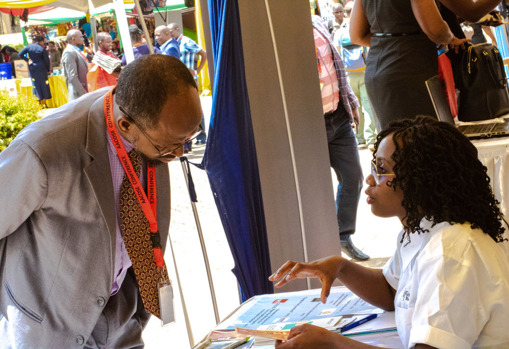

Social Entrepreneurship through Blockchain Technology
Africa’s 2nd largest Social Entrepreneurship Conference was held at Tangaza University College in Nairobi. The two day conference Established in 2017, aimed to redefine the future of social enterprises in Kenya and Africa at large.

Grassroots Team at AACOSE in Tangaza University.
Themed Contextualizing and shaping social entrepreneurship in Africa, this conference attracted over 700 participants who included social entrepreneurs practitioners, policy makers, investors, community leaders and academicians across Africa.
Among'st them was Grassroots Economics; which launched the first community-currency in 2013 by the name Bangla Pesa used in Bangladesh community Mombasa County, Kenya. Bangla Pesa is one of the community-currencies, (CCs) under the Sarafu-Network, that Grassroots Economics introduced to support economically marginalized communities. This network creates an inclusive financial systems where users can readily access credit (without the burden of interest) and setup cost-effective trade networks.
After establishing the gap existing between largely underutilized range of human and material resources in the poorest communities, Sarafu-Credit was wheeled to address food insecurity, chronic poverty, lack of labor/ investment, currency fluctuations and the volatility of the national market which are some of the SDGs envisioned for all countries by the UN by 2030.
This means of exchange provided the how-tos that enabled individuals, institutions like Sifa school in Kawangware, and whole societies to flourish in a world of rapid change. Sarafu-Credits used in different regions by these traders included Ngombeni Pesa in Mikindani, Lindi Pesa in Kibera, Kangemi Pesa in Kangemi, Gatina Pesa in Kawangware, and Bangla Pesa in Bangladesh-Mombasa.
To date, these CCCs have provided long term support to micro traders with over 1200 businesses, schools, farms and cooperatives showing over 25% increase in regional trade.
So far this economic system has empowered the “unbanked poor” by linking small traders’ profits with common resources through which they can connect to markets and access sustainable food systems.

Lucy Akinyi, a Sarafu-Credit (Lindi Pesa) user from Kibera.
AACOSE 2018( African Conference On Social Entrepreneurship) held from the 20th to the 21st of September, addressed themes like scaling up, innovation training for social entrepreneurship and coaching for investor readiness. This forum served as a platform that enabled social entrepreneurs to showcase proof of significant increases in regional economies, food security, trade, and environmental services throughout Africa. The conference comes days after the launch of a blockchain based Sarafu model, Bancor by Grassroots Economics.

This world class system of impact assessment and evidence-based programming, is meant to inspire communities to create their own financial systems and structures that actually work for them, establishing independence rather than creating new dependencies. By decentralising the monetary system, Bancor will level the playing field creating a fair market, cost effective trade network not to mention debt-free credit system.
AACOSE forum which exists to support the growth and development of social enterprises across Africa, was a pedestal for Grassroots Economic amongst many other social enterprises to grow awareness and educate, creating the conditions for sector collaboration.
Aiming to create a shared value, high impact and lasting change in communities, the pioneer of Community currency in Kenya Will Ruddick alongside Emanuel Dominic the COO delivered the concept behind Sarafu-Token (digitized Sarafu-Credit) as a pitch to practitioners, investors and academicians showing scalability/sustainability of this Bancor wallet.
Having the crowd at hello, they exemplified this blockchain technology which will enable traders to use USSD to facilitate timely transactions across communities and reinforce transparency through the use of smart contracts.

And since these social enterprises need donor fund and sponsorships in order to achieve their goals and positively impact the community, this conference was successful in setting a movement for social entrepreneurs, bringing them together as a community of practice who share ambitions, diversity and purpose as the key ingredient all across Africa. Serving as a hub for investors, Grassroots Economics as a foundation was able to network with potential donors garnering interest and support required in their journey of establishing a benchmark for certification of currency designers in Kenya.
Want to participate, subscribe to our newsletter to never miss an update!
You can also drop us a comment on our social media pages, and don't forget to
click on the website www.grassrootseconomics.org to find out more on Sarafu-Credit.